응용지질기사 (2008-07-27 기출문제)
1과목: 암석학 및 광물학
1. 석영 (SiO2)은 생성환경에 따라 여러 형태로 산출 된다. 대륙의 충돌대와 같은 고압환경에서 흔히 발견되는 석영의 변종은 무엇인가?
- β석영
- 크리스토발라이트
- 트리디마이트
- 코에사이트
(정답률: 65%)

2. 대경축은 360도 회전하는 동안 같은 형태가 반복 되는 횟수에 따라 여러 가지 대칭축이 존재한다. 다음 중 실제 존재하지 않는 대칭축은
- 1회 대칭축
- 3회 대칭축
- 5회 대칭축
- 6회 대칭축
(정답률: 85%)
3. 다음 (ㄱ)과 (ㄴ)에 들어갈 용어로 맞게 짝지어진 것은?
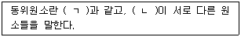
- (ㄱ)- 원자번호, (ㄴ)-원자량
- (ㄱ)- 중성자수, (ㄴ)-전자수
- (ㄱ)- 원자번호, (ㄴ)-전자수
- (ㄱ)- 양성자수, (ㄴ)-중성자수
(정답률: 67%)
4. 다음 중 쪼개짐(벽개:Cleavage)이 팔면체상으로 잘 발달되는 광물은?
- 다이아몬드
- 녹주석
- 석영
- 섬아연석
(정답률: 54%)
5. 다음 중 두가지 이상의 원소로 구성된 이온은?
- 다이아몬드
- 착이온
- 복수이온
- 합이온
(정답률: 알수없음)
6. 해수에서 철화합물로부터 황철석이 침전되는데 알맞은 환경의 조건은?
- pH : 7.2 ∼ 8.5, Eh : +0.⑤ ∼ +0.4
- pH : 6 ∼ 7.5, Eh : +0.⑤ ∼ -0.2
- pH : 7.2 ∼ 9, Eh : -0.2 ∼ -0.5
- pH : 3 ∼ 1, Eh : +0.⑤ ∼ +0.4
(정답률: 64%)
7. 방해석의 (0001)면에서 측정되는 모스의 경도는?
- 1
- 2
- 3
- 5
(정답률: 82%)
8. 다음 중 연마한 광물의 표면에 미세한 전자선을 조사시켜 발생되는 2차 X-선스펙트럼의 파장과 강도를 분해함으로써 광물이 들어있는 원소들을 측정하는 분석법은 무엇인가?
- 중성자회절분석
- X-선형광분석
- 원자흡수분광분석
- 전자현미분석
(정답률: 알수없음)
9. 다음 중 가역천이(Enantiotropy)의 관계인 것은?
- 황철석 - 백철석
- 아라고나이트 - 방해석
- 저온석영 - 고온석영
- 정장석 - 사장석
(정답률: 70%)
10. 광물의 색을 좌우하는 주요인이 아닌 것은?
- 화학조성
- 결정구조
- 불순물의 존재 유무
- 방향에 따른 결합력의 차이
(정답률: 73%)
11. 파도의 영향이 미칠 수 없는 상당히 깊은 해저에서 발견되는 퇴적물의 기원을 잘 설명해주는 것은?
- 곡류
- 저탁류
- 해류
- 와류
(정답률: 90%)
12. 다음 중 가장 압력이 높은 변성암은?
- 각섬암상
- 백립암상
- 에클로자이트상
- 청색편암상
(정답률: 알수없음)
13. 편암의 특징에 대한 설명으로 틀린 것은?
- 엽상 구조는 편마암보다 더 뚜렷하다.
- 육안으로는 결정이 구분되지 않는다.
- 편리에 따라 비교적 잘 쪼개진다.
- 쪼개진 면이 평탄치 못하고 파상을 이루기도 한다.
(정답률: 알수없음)
14. 다음 중 현정질 화성암이 광물학적 분류 기준으로 틀린 것은?
- 석영의 존재 유무
- 장석의 종류와 그들 사이의 영적인 비
- 고철질 광물의 종류
- 운모의 존재 유무
(정답률: 30%)
15. 한 개의 큰 광물 중에 다른 종류의 작은 결정들이 다수불규칙하게 들어있는 화성암의 조직은?
- 문상 조직
- 반상 조직
- 취반상 조직
- 포이킬리틱 조직
(정답률: 59%)
16. 아르코스 사암의 설명으로 맞는 것은?
- 장석이 25% 이상인 사암이다.
- 셰일이 25% 이상인 사암이다.
- 운모가 25% 이상인 사암이다.
- 점토가 25% 이상인 사암이다.
(정답률: 90%)
17. 화성암이 염기성암에서 산성암으로 변함에 따른 설명으로 틀린 것은?
- Na2O + K2O의 함유랑 증가
- CaO +FeO의 함유량 감소
- 유색광물의 함유량 증가
- SiO2의 함유량 증가
(정답률: 60%)
18. 어떤 암석을 현미경으로 관찰하였더니 석영과 정장석이 전혀없었다 이와 같은 특징을 가지는 암석은?
- 화강암
- 안산암
- 섬록암
- 감람암
(정답률: 55%)
19. 다음 중 퇴적암에 대한 일반적인 설명으로 틀린 것은?
- 육지 표면에 분포되어 있는 암석의 75%는 퇴적암( 및 변성퇴적암)으로 되어 있다.
- 육상에 분포한 퇴적암층의 평균 두께는 약 10Km이다.
- 퇴적암은 천연가스, 석유, 철광층과 화석을 포함한다.
- 퇴적암은 지표에 노출된 암석이 풍화, 침식, 운반, 퇴적, 고화 작용을 받아 형성된다.
(정답률: 알수없음)
20. 변성정도를 지시해주는 지시광물이 처음 출현하는 지점을 연결한 선을 무엇이라 하는가?
- 변성흔적대선
- 등변성도선
- 지체구조선
- 변성쌍대
(정답률: 43%)
2과목: 구조지질학
21. 단층면의 주향과 경사는 N15° E/30° SE이고, 단층면 상의 단층조선의 피치(pitch)가 30° N인 단층에서 실변위(net slip)가 2.5cm로 기록되었다면, 다음 중 가장 큰 값은?
- 주향이동성분(strike-slip component)
- 경사이동성분(dip-slip component)
- 수평이동(heave)
- 수직성분(verical component)
(정답률: 65%)
22. 한반도의 선캠브리아누대에 속하는 지질단위가 아닌 것은?
- 경기변성암복합체
- 낭림누층군
- 율려층군
- 대석회암층군
(정답률: 50%)
23. 다음은 무엇이 되기 위한 조건인가?
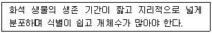
- 표준화석
- 시상화석
- 흔적화석
- 몸체화석
(정답률: 77%)
24. 단층과 절리에 대한 설명으로 옳지 않는 것은?
- 절리란 수축 또는 팽창에 의해 암석 중에 생긴 틈을 말 한다.
- 절리는 연성변성작용에 의해, 단층은 취성변성 작용에 의해 형성된다.
- 단층과 절리 모두 응력조건과 암석의 물성에 따라 결정되는 불연속면이다.
- 단층은 암석 내에 발달해 있는 틈이나 단열로서 이틈의 양 벽의 변위가 최소 5㎜ 이상이어야 한다.
(정답률: 알수없음)
25. 다음 중 해안에서 내륙쪽으로 가장 멀리 떨어진 곳에 쌓인 퇴적층은 어느 것인가?
- 선상지
- 삼각주
- 사주
- 자연제방
(정답률: 69%)
26. 판구조론에 입각한 조산운동에 의하면 히말라야산맥의 생성원인은 다음 중 어떤 것인가?
- 호상열도형
- 코디레라형
- 대륙-호상열도 충돌형
- 대륙-대륙 충돌형
(정답률: 77%)
27. 다음 중 맨틀에 가장 풍부하게 존재하는 광물은?
- 석영
- 운모류
- 감람석
- 장석류
(정답률: 80%)
28. 다음 중 응력조건상 습곡구조와 수반되어 발견되기가 가장 쉬운 단층은?
- 역단층
- 주향이동단층
- 정단층
- 성장단층
(정답률: 65%)
29. Anticlinorium 이란 다음 중 어떠한 지질구조를 의미 하는가?
- 다수의 습곡이 대규모의 향사를 이루고 있는 지질구조
- 주경사의 방향으로 습곡축들이 발달하는 지질구조
- 다수의 습곡이 대규모의 배사를 이루고 있는 지질구조
- 습곡과 단층이 반복하는 지질구조
(정답률: 70%)
30. 다음은 층상단층작용에 의해 형성된 현상이다. 그림에서 화살표(⇧)는 무엇인가?
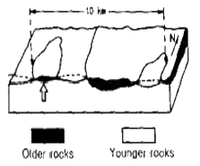
- Fenster
- Window
- Klippe
- Graben
(정답률: 67%)
31. 다음 그림은 하나의 배사구조를 형성하는 지형의 층리를 측정하여 입체투영한 것이다. 배사축의 선주향과 선경사로 맞는 것은? (단, 층리면은 하반구에 π-diagramd으로 표시함)
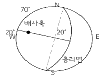
- N20 E 20
- N20 E 70
- N70 W 70
- N70 W 20
(정답률: 50%)
32. 다음 중 대양지각에서 대륙지각쪽으로 갈수록 증가하는 성분은?
- K
- Al
- Ca
- Mg
(정답률: 알수없음)
33. 다음 중 우곡이 무수히 패여서 형성된 거친 지형을 무엇이라 하는가?
- 토주(earth pillar)
- 악지(bad land)
- 애추(talus)
- 와지(blowout)
(정답률: 93%)
34. 바람의 풍반작용과 마모작용을 통해 만들어진 지형이 아닌 것은?
- 사막포장
- 야당
- 사구
- 풍식력
(정답률: 90%)
35. 다음 중 환태평양 지진대에 속하지 않는 나라는?
- 일본
- 뉴질랜드
- 미국
- 파라과이
(정답률: 92%)
36. 다음 중 대륙지각의 분류라 할 수 없는 것은?
- 순상지
- 대지
- 오피올라이트
- 현생누대 조산대
(정답률: 88%)
37. 다음 그림(변형분포도, Strain field diagram)에서 (A)지역에 나타나는 변형대는?
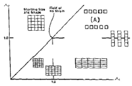
- 보상변형
- 선형신장
- 축소변형
- 평창변형
(정답률: 알수없음)
38. 지층의 상하를 구별하는데 이용되는 퇴적암의 일차구조에 포함되지 않는 것은?
- 연흔
- 사층리
- 건열
- 다이어시스템
(정답률: 알수없음)
39. 다음은 하계망의 기본 유형이다. 지구조운동의 영향을 가장 적게 받는 것은?
- 격자상 수계
- 직각상 수계
- 수지상 수계
- 방사상 수계
(정답률: 알수없음)
40. 암석이 변형을 받으면 다양한 형태의 단층과 습곡 등의 지질구조를 형성한다. 이러한 다양은 지질구조를 형성하게 되는 주요한 원인과 가장 거리가 먼 것은?
- 암석의 물성
- 변형을 받은 깊이
- 응력의 조건
- 암석의 생성시기
(정답률: 알수없음)
3과목: 탐사공학
41. 자력탐사에서 관심의 대상이 되는 가장 중요한 물질과 짝지은 것은?
- 석영, 장석류 - 반자성
- 자철석, 티탄철석, 자류철석 - 페리자성
- 휘석류, 각섬석류, 감람석 - 상자성
- 철, 니켈, 코발트 - 강자성
(정답률: 86%)
42. 암석이나 퇴적물에서의 탄서파의 속도에 관한 일반적인 설명으로 틀린 것은?
- 불포화된 퇴적물은 포화된 퇴적물보다 속도가 느리다.
- 미고결 퇴적물은 고결 퇴적물 보다 속도가 느리다.
- 포화된 미고결 퇴적물은 퇴적물의 종류에 따라 속도가 다르다.
- 풍화된 암석의 풍화되지 않는 암석보다 속도가 느리다.
(정답률: 73%)
43. 원소들이 자연물질에 분포되는 정도는 그 원소의 지구화학적 환경에 따른 이동도(mobility)에 좌우 된다. 다음 중 지연상태에서, 비이 동성 원소에 속하는 것은?
- 브롬(Br)
- 마그네슘(Mg)
- 규소(Si)
- 금(Au)
(정답률: 34%)
44. 전류전극간의 간격을 전위전극간의 간격보다 매우 크게 하고 전류 전극의 중심에 전위전극을 위치 시켜 수직적인 전기비저항의 변화를 탐지하는데 편리한 특징을 갖는 전기탐사의 전극 배열법은?
- 단극-쌍극자 배열
- 쌍극자 배열
- 리 배열
- 슐럼버져 배열
(정답률: 60%)
45. 수평 2층 구조에 대한 굴절법 탄성파 탐사에서 다음과 같은 주시 곡선을 얻었을 때 1층 두께(Z)를 바르게 나타낸 것은? (단, V1, V2는 1층과 2층의 탄성파 전파속도)
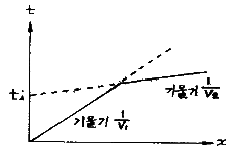
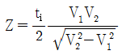
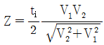
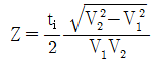
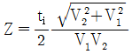
(정답률: 알수없음)
46. Goldschmidt의 지구 화학적 원소의 분류로 맞는 것은?
- 친철원소 : 니켈, 리튬, 텅스텐
- 친동원소 : 비소, 납, 아연
- 친석원소 : 라돈, 바나듐, 헬륨
- 친기원소 : 질소, 염소, 불소
(정답률: 46%)
47. 다음 중 핵자력계에 대한 설명으로 틀린 것은?
- 자기공명현상을 이용하여 총자기를 측정하는 자력계이다.
- 0.1초 이하의 간격으로 연속측정이 가능하다.
- 센서가 다소 흔들려도 영향을 받지 않아 항공탐사에 매우 유용하다.
- 측정시 측정방향을 고려할 필요가 없다.
(정답률: 62%)
48. 측정과 기준면 사이의 고도차가 10m이고 그 사이에 존재하는 물질의 밀도가 2.0g/cm3일 경우 부게 보정 값은?
- 0.0020965 mgal
- 0.08386 mgal
- 0.4193 mgal
- 0.8386 mgal
(정답률: 50%)
49. 댐이나 제방의 누수를 탐지하기 위해 자연전위탐사를 실시한다고 하면, 이때 주로 어떤 자연 전위를 측정하게 되는가?
- 광화전위
- 셰일전위
- 유동전위
- 확산전위
(정답률: 알수없음)
50. 웨너식 전극배열에 의한 전기탐사에서 전극간격이 100m, 사용전류 4A에서 포텐샬 전극간 전위차가 500mV 로 측정되었을 때 대지의 겉보기 비저항은?
- 19.63
- 39.27
- 78.54
- 150.08
(정답률: 55%)
51. 탄성파 주시 토모그래피의 설명으로 틀린 것은?
- 송,수신 시추공 사이의 속도 분포 영상을 제공한다.
- 수신기로는 다중 채널 측정이 가능한 하이드로폰이 주로 사용된다.
- 초동의 도달시간을 발췌하여 역산을 수행한다.
- 초동의 진폭에 대한 정보도 역산에 필요하다.
(정답률: 69%)
52. 반사법 탄성파 탐사에 있어서 초기 반사파가 도달하기 전에 먼저 도달하는 진폭이 큰 직접파를 제거하는 작업은?
- 디멀티플렉스
- 디콘볼루션
- 뮤팅
- 편집
(정답률: 60%)
53. 여러 조암 광물에 흔히 포함되어 있다는 장점이 있고, 비교적 반감기가 짧아서 젊은 암석의 연령 측정이 가능하며, 측정할 수 있는 연령 범위가 매우 넓은 절대연령 측정법은?
- Rb-Br법
- U-Pb법과 Th-Rb법
- C법과 Tritium법
- K-Ar법
(정답률: 58%)
54. 다음 중 지자기의 영년 변화의 원인이 되는 것은?
- 자기폭풍
- 태양에서 나오는 자외선이나 x-선
- 달의 인력
- 맨틀이나 외핵의 운동
(정답률: 알수없음)
55. 다음 그림과 같이 탄성파 전파속도 V1=1000m/sec, V2=2000m/sec인 수평 2층 구조에 대한 굴절법 탄성파 탐사시 지표면에 도달되는 굴절파와 지표면의 각도는?
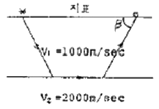
- 30°
- 45°
- 60°
- 90°
(정답률: 58%)
56. 다음의 육상 전자 탐사법 중 측정하는 대상이 다른 것은 무엇인가?
- 보상계법
- 튜람법
- 수평루프법
- 평행선법
(정답률: 34%)
57. 다음 중 자력탐사에 대한 설명으로 틀린 것은?
- 자력탐사는 다른 탐사기법과 비교할 때 분해능력이 상대적으로 낮지만 탐사의 깊이가 깊고 항공 및 해상탐사가 가능하므로 석유 등 지하자원 탐사와 지구조연구를 위한 광역 탐사에 이용된다.
- 대자율과 지자기장의 곱으로 표현되는 자화 강도를 측정함으로써 자기 이상체를 탐지하거나 지하구조를 추정하는 방법이다.
- 자력탐사는 중력탐사와 같이 지형보정, 고도보정, 프리에어보정을 반드시 실시해야 한다.
- Flux-gate 자력계는 자기유도와 자기이력을 이용하여 시추 코어의 방향과 같은 자기장 성분을 측정하는 자력계이다.
(정답률: 75%)
58. 다음 중 반암동 광상의 지구 화학탐사에서 지시 원소가 되는 것은?
- Nb
- Ti
- Mo
- U
(정답률: 80%)
59. 중력 및 자력탐사 자료의 처리과정에서 2차 미분법의 적용 목적은?
- 잔여이상추출
- 부게이상 추출
- 지형보정
- 고도보정
(정답률: 80%)
60. 두 지점 간을 전파하는 탄성파는 최단주시를 갖는 파선 경로를 따라 전파된다는 원리 또는 법칙을 무엇이라고 하는가?
- 페르마의 원리
- 호이겐스의 원리
- 스넬의 법칙
- 패러데이 법칙
(정답률: 알수없음)
4과목: 지질공학
61. Q-system에 의한 암반분류에서 RQD가 5%, 절리군의 수에 의한 계수 Jn=15, 절리의 거칠기 계수 Jr=1.5, 절리의 변질 계수 Ja=1.0, 지하수에 의한 저감계수 Jw=1.0, 응력저 감계수 SRF=2.0 일 때 Q값은?
- 0.15
- 0.25
- 0.5
- 1.0
(정답률: 64%)
62. 다음 중 수두에 관한 설명으로 적합하지 않은 것은?
- 전체 수두는 단위중량의 물이 갖는 에너지의 합을 의미한다.
- 물의 흐름은 위치수두가 작은 지점에서 큰 지점으로 향한다.
- 전체 수두는 압력수두와 위치 수두, 속도수두의 합으로 주어진다.
- 수두손실은 물과 매질 사이의 마찰에 의해 발생한다.
(정답률: 85%)
63. 흙의 통일 분류법에서 소성이 낮은 유기질 실트 또는 유기질 실트 점토를 나타내는 기호는?
- ML
- CL
- OL
- PT
(정답률: 80%)
64. 사면 안정화 공법 중 안전율 증가법(억지공)에 속하지 않는 것은?
- 절토공
- 억지말뚝공
- 배수공
- 옹벽공
(정답률: 73%)
65. 유선망의 특성 중 잘못된 것은?
- 인접한 2개의 유선 사이를 흐르는 침투수량은 서로 같다.
- 유선망을 이루는 사각형은 이론상 직사각형이다.
- 인접한 2개의 등 수두선 사이의 손실 수두는 서로 같다.
- 흙이 균질할 때 흙속의 침투수는 수두 경사가 급한 방향으로 흐른다.
(정답률: 73%)
66. 3개의 층으로 이루어진 지반이 있다. 층의 두께는 상부로부터 2.0m, 3.2m, 4.8m이고, 이 층들의 투수계수는 각각 1.0×10-4cm/sec, 2.0×10-2cm/sec, 2.0×10-5cm/sec이다. 수평방향으로의 등가투수계수는 얼마인가?
- 6.4×10-3cm/sec
- 6.4×10-4cm/sec
- 3.2×10-3cm/sec
- 3.2×10-4cm/sec
(정답률: 75%)
67. 불연속면의 주향방향이 터널 진행방향과 평행하고 경사가 70° 이다. 이 불연속면의 방향성이 터널의 굴진에 미치는 영향으로 맞는 것은?
- 매우 불리
- 불리
- 보통
- 유리
(정답률: 47%)
68. 다음 중 풍화(Weathering)에 대한 설명으로 틀린 것은?
- 건조하거나 추운 지역에서보다 열대지방이 풍화가 더 잘 일어난다.
- 고온에서 생성된 광물들은 저온에서 정출된 광물들에 비해 더 쉽게 풍화된다.
- 지표 환경과 비슷한 퇴적암이 화성암과 비교할 때 풍화에 약하다.
- 비가 많은 열대지방에서 고령석이 가수분해되면 보옥사이트가 된다.
(정답률: 70%)
69. 건조하여 점착력이 없고 내부마찰각이 26.6° 인 무한사면의 경사가 45° 일 때 안전율은 얼마 인가?
- 0.5
- 1.0
- 1.5
- 2.0
(정답률: 55%)
70. 다음 중 피안 대수층에 해당하는 것은?
- 점토층 하부에 사력층이 있는 경우
- 사력층 하부에 점토층이 있는 경우
- 점토층 상하부에 사력층이 있는 경우
- 사력층 상하부에 점토층이 있는 경우
(정답률: 알수없음)
71. 연악지반의 개량공법 중 주로 점성토 지반의 압밀 촉진을 위하여 채택되는 공법이 아닌 것은?
- 샌드 드레인 공법
- 바이브로 플로테이션 공법
- 프리 로딩 공법
- 팩 드레인 공법
(정답률: 62%)
72. 다음 중 투수계수에 영향을 미치는 요소에 대한 설명으로 틀린 것은?
- 공극비가 커질수록 투수계수는 증가한다.
- 면모구조를 갖는 흙이 이산구조를 갖는 흙보다 투수계수가 크다.
- 물의 점성이 클수록 투수계수가 작아진다.
- 물의 온도가 증가함에 따라 투수계수는 감소한다.
(정답률: 알수없음)
73. 어떤 암석시료는 시간에 따른 거동이 달라지는 creep 현상을 보여 실험에 있어서도 시간에 따른 계속적인 관찰이 필요하다. 다음 중 creep 현상을 가장 잘 보이는 암석은?
- 사암
- 암염
- 섬록암
- 유문암
(정답률: 64%)
74. 습곡구조에서 터널을 굴착할 때에 대한 설명으로 틀린 것은?
- 습곡의 향사부에서는 지압이 증가할 수 있다.
- 습곡의 배사부 정점부에서는 지표로부터 용수가 침투 할 가능성이 적다.
- 습곡의 향사부 아래에 불투수층이 있는 경우 터널에서 용수가 있을 수 있다.
- 습곡의 배사부에서는 지층의 아치작용에 의해 지압이 경감될 수 있다.
(정답률: 알수없음)
75. 어떤 암석의 포화단위중량은 30kN/m3, 건조단위중량은 28kN/m3인 경우 공극률은 얼마인가? (단, 물의 단위중량은 10kN/m3)
- 5%
- 10%
- 15%
- 20%
(정답률: 25%)
76. 암석의 풍화 정도를 측정하기 위한 지수 시험법(Index test)으로 적당한 것은?
- 전단시험
- 슬레이크 내구성 시험
- 평판재하시험
- 피로시험
(정답률: 82%)
77. 토질시험법 중 사운딩(Souding)에 대한 설명으로 틀린 것은?
- 로드 선단의 저항체를 땅속에 넣어 관입, 회전, 인발 등의 지반의 강도 및 밀도 등을 구하는 시험이다.
- 사운딩은 크게 정적시험 과 동적시험으로 구분한다.
- 정적시험으로는 표준관입시험이 대표적이다.
- 베인전단시험은 연약점토 지반에 적당한 시험법으로 원위치 전단강도 측정에 사용된다.
(정답률: 43%)
78. 불규칙적인 불연속면이 다수 분포하는 암반사면에서 발생하는 사면파괴의 양상은?
- 원호파괴
- 쐐기파괴
- 평면파괴
- 전도파괴
(정답률: 59%)
79. 시추주상도에 일반적으로 기재되는 항목이 아닌 것은?
- 아섬의 종류
- 풍화 상태
- 시추작업위치
- 암반등급
(정답률: 90%)
80. 지름이 6cm이며, 길이가 15cm인 원통형의 암석시료를 사용하여 일축압축시험을 실시하였다. 150000N의 힘을 축 방향으로 가하였을 때 축 장향으로 0.01cm 수축되었다면 탄성계수(E)는 약 얼마인가? (단, 암석시료를 완전한 탄성체로 가정)
- 53MPa
- 79MPa
- 53GPa
- 79GPa
(정답률: 16%)
5과목: 광상학
81. 투수율이 증가된 습곡의 배사부분에 열수광화유체가 유입되어 생성되는 광상의 형태는?
- 안장상 광체
- 망상광체
- 각력 광체
- 괴상 광체
(정답률: 70%)
82. 다음 중 지질 온도계로 활용 할 수 없는 것은?
- 광물의 용융점
- 유체포유물
- 방사성 동위원소
- 안정 동위원소
(정답률: 알수없음)
83. 다음 중 반암동(Porphyry Copper)광상과 관계가 없는 광산은?
- 칠레 엘살바도르 광산
- 필리핀 레판토 광산
- 미국 산 마노엘-칼라마주 광산
- 일본 히시카리 광산
(정답률: 10%)
84. 배호분지에 가장 일반적으로 형성되는 광상은?
- 마그마기원 크롬철석광상
- 망간단괴광상
- 접촉교대광상
- 화산성 괴상황화물광상
(정답률: 60%)
85. 광체보다 넓게 분포하여 광상탐사의 수단이며, 광상 생성에 대한 중요한 정보를 제공하는 것은?
- 관계화성암체
- 지표 풍화대
- 변질대
- 모암의 구조대
(정답률: 65%)
86. 납석광상은 대표적인 열수변질점토광상에 속하는데 이러한 광상에서 흔히 수반되는 광물이 아닌 것은?
- 명반석
- 고령도
- 다이아스포아
- 불석
(정답률: 22%)
87. 한국의 주요 철광상 중의 하나였던 강원도 야양 철광의 철광을 배태하는 암석은?
- 각섬암(amphibolite)
- 유문암(rhyolite)
- 회장암(anorthite)
- 규암(quartzite)
(정답률: 55%)
88. 우리나라 중열수형 금.은 광상의 특징이 아닌 것은?
- 광화시기는 쥬라기이다.
- 모암은 주로 화강편마암이다.
- 생성심도는 750m 이내이며, 다량의 복합적인 황화광물을 수반한다.
- 모암의 열수변질작용은 대체로 약한 편이다.
(정답률: 37%)
89. 우리나라의 우라늄광상이 가장 많이 산출되는 지층은?
- 옥천계
- 대동계
- 경상계
- 평안계
(정답률: 84%)
90. 우리나라 불국사 화강암의 관입 시기는?
- 백악기
- 쥬라기
- 트라이아스기
- 석탄기
(정답률: 알수없음)
91. 마그마수에 대한 설명으로 틀린 것은?
- 마그마수는 광화유체에 속한다.
- 마그마수 내에는 휘발성분의 양이 매우 적다.
- 마그마수 내에는 Li, B 등 원자반경이 큰 친석 원소가 풍부하다.
- 마그마수는 지표면에 유출된 적이 없기 때문에 처녀수라고도 한다.
(정답률: 59%)
92. 분결분산(segregation dissemination)작용에 의하여 생성된 대표적인 광물은?
- 알루미늄
- 다이아몬드
- 크롬철석
- 니켈
(정답률: 20%)
93. 주요 산업원료광물(비료, 화학공업용) 등으로 사용되는 인광상(guano)의 성인으로 적합한 것은?
- 정마그마광상
- 기성광상
- 퇴적광상
- 천열수광상
(정답률: 59%)
94. 표성부화광상이 이루어지는데 선행조건이 되는 것은?
- 충진작용
- 교대작용
- 열변성작용
- 산화작용
(정답률: 알수없음)
95. 다음 중 대륙붕에 분포하는 자원이 아닌 것은?
- 석탄
- 주석
- 암염
- 망간단괴
(정답률: 50%)
96. 모암과 광화용액 사이의 반응에 의하여 일어나는 모암변질 효과와 가장 거리가 먼 것은?
- 모암에 재결정작용을 일으킨다.
- 모암을 일부 용융시킨다.
- 모암에 투수성을 증가시킨다.
- 모암의 색깔을 변화시킨다.
(정답률: 42%)
97. 다음 중 일반적으로 구로코형(Kuroko type) 광상생성이 수반되는 화성암체는?
- 반려암
- 안산암
- 유문암
- 현무암
(정답률: 48%)
98. 다음 중 고품질의 석회암이 산출되는 지층은?
- 백악기 유천층군
- 쥬라기 대동층군
- 신생대 연일층군
- 고생대 풍촌층군
(정답률: 알수없음)
99. 텅스텐, 몰리브덴 광상의 모암에서 주로 관찰되는 변질작용으로 모암이 Ca, Mg, 또는 Mn 등을 함유하는 석회질 셰일, 석회암, 백운암이며 이에 실리카, 알루미나, 철 등을 함유하는 열수용액이 공급되어 칼슘, 마그네슘, 알루미늄 및 철 등의 규산염 광물집합체로 변질되는 주요한 모암변성 작용을 무엇이라 하는가?
- 규화
- 프로필라이트화
- 주석화
- 스카른화
(정답률: 55%)
100. 지하 깊은 곳에서 광화용액(Ore bearing fluid)이 이동하는 방법과 거리가 먼 것은?
- 확산(Diffusion)을 통한 이동
- 결정의 벽개면을 통한 이동
- 입자의 경계를 통한 이동
- 정상류처럼 흐름(Flow)을 통한 이동
(정답률: 84%)